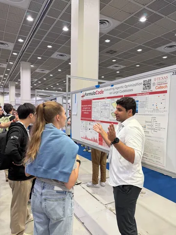
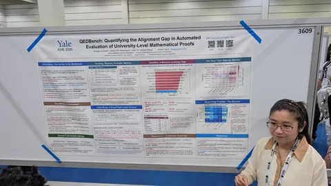
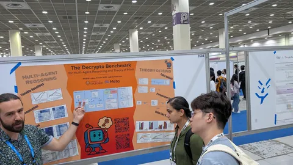

Работ о бенчмарках на ICML традиционно много. По сравнению с прошлым годом, в 2026 стало заметно больше бенчей для агентов. А ещё начали чаще встречаться работы из академии.
Объяснение простое. Корпорации вкладывают много сил во внутренние бенчи: делают сами, покупают их у data-labeling-компаний (например, Surge, Mercor, Handshake AI, Toloka) — и, как следствие, такие бенчи редко опенсорсят.
Остальные бенчмарки часто делаются ощутимо меньшими ресурсами. И, как следствие, страдают от типичных проблем:
• мало человеческой верификации данных,
• качество judge'ей-верификаторов редко полноценно исследуется,
• плохо оценивается качество пар запрос + ground-truth-ответ, сгенерированных LLM,
• редко проверяется контаминация, хотя бенчи собираются из открытых источников.
Авторы постеров, вошедших в подборку, отметили, что подготовка одного бенча занимает в среднем 3–4 месяца фултайм-работы.
τ²-Bench: Evaluating Conversational Agents in a Dual-Control Environment
Команда τ-бенча продолжает свою работу. В этот раз получили spotlight. Предыдущие версии были single-control: то есть, тулы были доступны только агенту, а пользователь пассивно выдавал текстовый фидбек. В реальном мире пользователь, конечно, взаимодействует со средой.
Новый бенчмарк сделали на примере телекома: у агента и у симулированного юзера свои БД и инструменты в общем мире. Валидация — не LLM-судьями, а ассертами на состояние мира.
Получившийся бенч заметно сложнее предыдущих версий: Сlaude-3.7 выбивает только 49%. Авторы используют абляцию, когда всё управление переходит агенту или если агенту дают подробный план, как надо поступать. Один из тейков: для агента важен скилл координации с пользователем, который обычные специализированные бенчи не измеряют вообще.
QEDBench: Quantifying the Alignment Gap in Automated Evaluation of University-Level Math Proofs
Этот бенч фокусируется в первую очередь на оценке надёжности самих судей: насколько LLM judge вообще способен оценивать математические доказательства примерно институтской сложности.
Авторы попросили экспертов переписать экзаменационные задачи из 10 математических дисциплин так, чтобы избежать контаминации. Также дополнили бенчмарк примерами из экзаменационных задач своего университета. Ответы фронтир-моделей оценивали:
• кандидаты математических наук по заданной шкале,
• LLM-судьи по рубрикам, заранее описанным людьми.
Всего авторы собрали 1300+ доказательств и 1000 часов разметки. Ожидаемо, судьи пропускают заметно больше неправильных решений: 38% показал самый лучший judge на GPT-5.2 Pro.
The Decrypto Benchmark for Multi-Agent Reasoning and Theory of Mind
Бенчмарк на Theory of Mind, собранный на основе настолки Decrypto. Alice даёт словесные подсказки к четырём секретным словам так, чтобы код угадал её партнёр Bob, но не угадал перехватчик Eve.
Сложность в том, чтобы подсказка была достаточно прозрачной для своего и непонятной для чужого — то есть, требует явно моделировать так, чтобы понял один и не распознал другой. Pass — исход игры.
Преимущество по сравнению со старыми статическими ТоМ-бенчами в том, что можно менять ключевые слова и собирать их в миллиарды комбинаций, избегая переобучения. Авторы проделали довольно подробную работу: предлагают промпты-правила и методики валидации, а также провели валидационные игры между людьми и моделями.
С игрой плохо справляются даже фронтир-модели: дают примитивные ассоциации (fire → flame, hat → cap), которые легко перехватить. С помощью отдельных тестов из области детской психологии, замерили representational change — понимает ли агент, что его собственное представление изменилось, когда пришла новая информация и изучили false belief — умение приписать ложное убеждение участнику дискуссии. Оба показателя составили менее 10%. Ризонинг не помогает: Llama 3.1-70B обходит и Claude 3.7, и o1.
Исследовала для вас бенчмарки
#YaICML2026
Душный NLP


